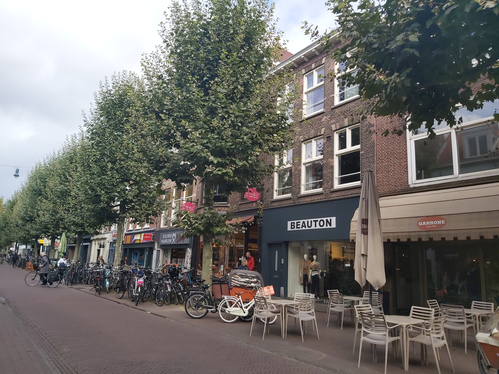

Grote Houtstraat is a picturesque and historic street located in the charming city of Haarlem, Netherlands. This iconic thoroughfare is renowned for its captivating blend of old-world charm and modern vibrancy. Lined with a diverse array of shops, boutiques, cafes, and restaurants, Grote Houtstraat offers a delightful shopping and dining experience for both locals and tourists alike. The street is adorned with elegant Dutch architecture, featuring ornate facades, gabled houses, and charming storefronts that reflect the city's rich cultural heritage. As you stroll down Grote Houtstraat, you'll also encounter cultural landmarks like the St. Bavokerk, adding to the street's cultural significance. With its lively atmosphere and historical allure, Grote Houtstraat encapsulates the essence of Haarlem's unique and inviting character.
Fietshokje, located in the charming city of Haarlem, is the go-to destination for all your biking needs. Whether you've just moved into the neighborhood with your family or are a seasoned local, having a reliable bike is essential in exploring Haarlem's picturesque streets and enjoying its family-friendly atmosphere. Fietshokje offers a wide selection of bicycles to suit your preferences and needs, ensuring you can navigate the city with ease. Their friendly and knowledgeable staff can assist you in finding the perfect bike for your family's adventures, making Haarlem's beautiful landscapes and attractions easily accessible. So, if you're ready to embark on unforgettable cycling experiences in Haarlem, make Fietshokje your first stop and pedal your way to discovery. For more information, you can visit their website at Fietshokje.nl
"Ristorante Napoli, nestled in the heart of Haarlem, is a culinary gem that transports diners to the vibrant streets of Naples, Italy." This charming eatery offers a truly authentic Italian dining experience, characterized by its warm and welcoming ambiance and a menu that showcases the rich flavors of Italian cuisine. From classic Neapolitan pizzas with perfectly blistered crusts to mouthwatering pasta dishes prepared with the freshest ingredients, Ristorante Napoli delights the palate of locals and visitors alike. The attentive and friendly staff adds to the restaurant's charm, making each visit a memorable and enjoyable experience. Whether you're seeking a romantic dinner for two or a gathering with friends and family, Ristorante Napoli is the perfect place to savor the essence of Italy in the heart of Haarlem.
Badhuistraat, nestled in the heart of Haarlem, is a picturesque and historic street that exudes the city's unique charm. Lined with beautifully preserved Dutch architecture, this enchanting street offers a glimpse into Haarlem's rich cultural heritage. Badhuistraat is known for its quaint houses with charming facades and ornate details, creating a lovely backdrop for leisurely strolls and exploration. The street is also home to a variety of boutique shops, cafes, and local businesses, making it a bustling hub for both residents and visitors. Whether you're admiring the architectural beauty, indulging in a cup of coffee at a cozy cafe, or simply taking in the ambiance of this captivating street, Badhuistraat encapsulates the essence of Haarlem's enduring appeal.
Haarlemmerhout Park, situated in the heart of Haarlemmerhoutkwartier, is a verdant haven that beckons both locals and visitors to immerse themselves in its natural beauty and serene surroundings. With a history dating back to the 16th century, it stands as one of the Netherlands' oldest public parks, steeped in rich heritage and charm. This expansive park offers an idyllic escape from the bustle of city life, inviting families with children to revel in its spacious lawns, where picnics and leisurely games can be enjoyed against a backdrop of towering trees that provide ample shade on sunny days. A network of picturesque paths and walking trails meander through the park, inviting leisurely strolls and bike rides. Haarlemmerhout Park's centerpiece is a beautiful pond, where graceful swans glide across the water and ducks paddle peacefully, creating a serene atmosphere. Children can feed the ducks or simply enjoy the spectacle of nature. Throughout the year, the park hosts various events, from outdoor concerts to cultural festivals, making it a vibrant hub for the local community. Its open spaces also serve as a fantastic venue for family gatherings and community activities. For those interested in history, the park boasts several historic monuments and sculptures, including the iconic Hildebrand Monument, dedicated to the famous Dutch author Nicolaas Beets. In spring, the park comes alive with the vibrant colors of blooming flowers, transforming into a floral wonderland. It's a popular spot for cherry blossom enthusiasts who gather to witness the stunning cherry trees in full bloom. Haarlemmerhout Park is not just a green oasis but a testament to the enduring beauty of nature within the city. Families with children can explore, play, and connect with the outdoors, creating cherished memories in the heart of Haarlem. Whether it's a leisurely afternoon, a family picnic, or a peaceful escape, Haarlemmerhout Park offers it all, making it a beloved gem in the Haarlemmerhoutkwartier neighborhood.
Kinderboerderij de Houthoeve is a delightful petting zoo located within the Haarlemmerhoutkwartier neighborhood. It's the perfect destination for families with children, offering a chance for kids to interact with various animals such as goats, rabbits, chickens, and more. The petting zoo provides a fun and educational experience, allowing children to learn about farm animals in a safe and supervised environment. It's a great place for kids to engage with nature and enjoy a hands-on experience with friendly animals.